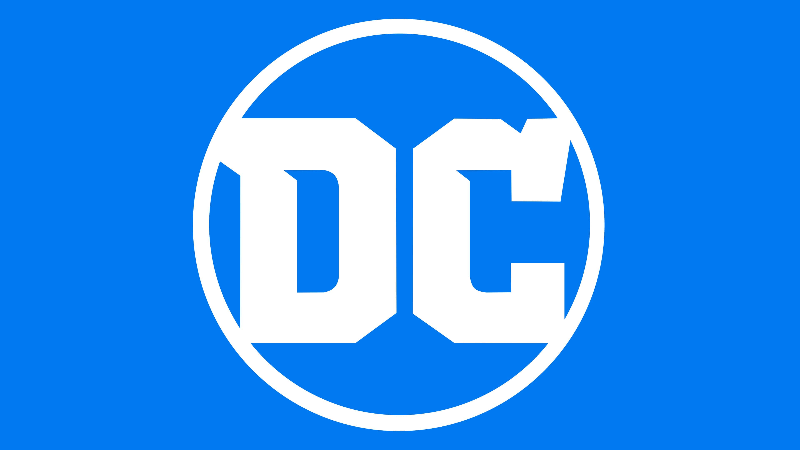

Marvel vs. DCDATA VISUALISATION

Marvel prend racine autour de 1960. La guerre est loin derrière, une nouvelle mouvance s’oriente vers la science et la technique. Les gens comprennent qu’il n’est plus nécessaire qu’une superpuissance ou une divinité les protège, et qu’ils sont capables de se défendre eux-mêmes grâce à la technologie.
Voilà pourquoi les héros Marvel sont plus :
– Modernes
– Mieux équipés et ont plus d’expériences

Pour DC Comics, les principaux personnages ont été introduits entre 1935-1945, donc pendant une période de guerre mondiale. À cette époque-là, les gens ne présument pas encore ce que sera l’avancée technologique.
Les atouts qu’ils souhaitent posséder pour les aider à gagner la guerre :
– La magie
– La superpuissance
– Des héros mythiques, des espions…
Marvel vs. DC le nombre de personnages en séparant les 2 univers
Marvel vs. DC Ici, on peut voir les genre des différents super-héros.
Comme prévu, dans les galaxies Marvel et DC, les femmes sont minoritaires dans la plupart des œuvres. Plus précisément, si l'on exclut les personnages de sexe indéfini, 80% des personnages de Marvel et 72% des personnages de DC présents dans plus de 10 œuvres sont des hommes.
Marvel vs. DC Un graphique afin de voir quel type de super-héros on a. Plutôt du côté obscur de la force ou du côté du bien ?
NOTE FINAL
⇢ Malgré des décénies de combat entre Marvel et DC Comics, Marvel reste THE FIRST !